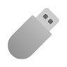
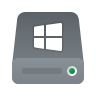
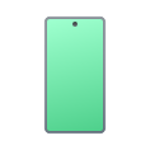
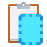
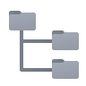
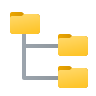
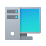
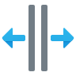
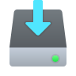

Tu primera copia
El Copier funciona siempre igual, sin importar cuántos dispositivos tengas conectados: buscas los archivos, los sueltas encima de los dispositivos y se copian todos a la vez. Mientras uno termina, los otros siguen. Cuando acaban, cobras.
- Conecta los dispositivos Memorias, discos, celulares… aparecen solos en el panel de la derecha en cuanto Windows los reconoce.
- Busca lo que vas a copiar Escribe en el Buscador de la izquierda y selecciona los archivos, o arrástralos directamente desde una ventana de Windows.
- Elige cómo se van a guardar El modo de copia decide qué pasa con lo que ya hay en el dispositivo, y la estructura decide en qué carpetas se van a guardar. Los valores de fábrica sirven para el 90 % del trabajo diario.
- Suelta los archivos sobre los dispositivos Puedes soltarlos sobre uno solo o sobre varios seleccionados. La copia arranca sola.
- Cobra y expulsa Cada tarjeta muestra su Total a pagar. Con la rueda central del mouse sobre la tarjeta lo marcas como Cobrado. Luego expulsas el dispositivo con seguridad.
Por qué es tan rápido
Cuando copias lo mismo a varias memorias, el Copier lee el archivo del disco una sola vez, lo guarda un momento en la memoria RAM y lo escribe en todas a la vez. Por eso copiar a diez memorias no tarda diez veces más que copiar a una.
La pantalla principal
La ventana se divide en dos paneles separados por una línea que puedes arrastrar para dar más espacio a uno o a otro:
Además, existe un modo doble para ver y manejar dos dispositivos a la vez, cada uno en su propio panel.
Panel izquierdo
El Buscador: desde aquí encuentras los archivos y los arrastras hacia los dispositivos.
 Panel derecho
Panel derecho
Los dispositivos conectados, cada uno con su barra de progreso y su total a pagar.
La barra de título
| Botón | Qué hace | |
|---|---|---|
| Siempre Encima | Mantiene la ventana del Copier por delante de las demás. Cómodo cuando trabajas arrastrando archivos desde el explorador de Windows. | |
| Capturar ventana | Toma una foto de la ventana tal cual está. Útil para dejar constancia de un trabajo o para reclamar un problema. | |
| Modo CompactoCtrl + M | Reduce la ventana a solo la lista de dispositivos, sin el Buscador. Ideal para pantallas pequeñas o para dejarla en una esquina vigilando. El Buscador sigue disponible en ventana aparte con Ctrl+F. | |
| Total diarioCtrl + S | Muestra u oculta el dinero acumulado del día. Se puede ocultar cuando hay clientes delante. | |
| Minimizar, Maximizar y Cerrar | Los de siempre. Al cerrar, si hay copias en marcha, la aplicación te pide confirmación. |
La barra de acciones
Debajo de los dispositivos está la barra con todas las herramientas. Se divide en acciones principales (lo que le haces a los dispositivos) y acciones secundarias (configuración, sesiones, modo y estructura), más los indicadores de Fecha y hora, Tiempo de Trabajo y Total diario.
Los contadores
Arriba se ven cuántos dispositivos hay y en qué estado: Dispositivos, Seleccionados, Trabajando y Red; y aparte el conteo del trabajo realizado: Memorias copiadas, Discos copiados y Celulares/Tablets copiados.
A la derecha hay también un indicador de Memoria RAM con lo usado y lo total. Si lo ves siempre al tope, revisa los ajustes de RAM.
El modo doble
El modo doble divide la ventana en dos paneles exactamente iguales, cada uno con su propio dispositivo y su propio explorador. La idea es simple: tienes un dispositivo en cada panel y copias de uno a otro sin cambiar de pantalla. Es muy útil cuando trabajas con dos memorias a la vez, por ejemplo para que un cliente deje una copia de seguridad en su memoria mientras tú llenas otra.
Lo enciendes y apagas con el botón Dos paneles de la barra de acciones (Ctrl + D), o con clic derecho sobre el mismo botón intercambias los paneles de lugar. El panel que tiene el foco se resalta con un borde de color, para que siempre sepas con cuál estás trabajando.
Cómo se maneja
Tab y ←/→
Cambian cuál de los dos paneles tiene el foco. Con ←/→ eliges según la posición en pantalla.
Ctrl + Tab
Intercambia los dos paneles de lugar, sin perder el dispositivo de cada uno.
Alt + letra de unidad
Abre ese disco en el panel contrario, útil para dejar listo el destino sin soltar el origen. Estas teclas no se roban mientras escribes texto.
Esc
Cierra el explorador del panel enfocado.
Copiar y mover entre paneles
Puedes pasar ficheros o carpetas de un panel al otro de varias formas:
| Cómo | Qué hace |
|---|---|
| F5 | Envía la selección del panel enfocado al otro, copiando y manteniendo la estructura de carpetas. |
| Ctrl + F5 | Como arrastrar con el botón derecho: envía al otro panel solo los ficheros sueltos, sin la estructura de carpetas. |
| Arrastrar con el botón izquierdo | Igual que F5: copia manteniendo la estructura de carpetas. |
| Arrastrar con el botón derecho | Copia solo los ficheros sueltos, sin la estructura de carpetas. Igual que Ctrl + F5. |
| Mismo disco en los dos paneles | Si los dos paneles tienen abierto el mismo disco, tanto F5, Ctrl + F5 como el arrastre mueven el elemento en vez de copiarlo, para no duplicarlo sobre sí mismo. |
Acciones sobre cada panel
Las acciones de la barra (Prioridad, Pausar/Continuar, Cancelar, Clonar, Formatear y Expulsar) actúan sobre el panel que elijas con el ratón: clic izquierdo sobre el panel izquierdo y clic derecho sobre el derecho.
Se recuerda lo que hacías
Al cerrar la aplicación se guarda el dispositivo y la carpeta abierta en cada panel; al volver a abrir, cada panel vuelve justo donde lo dejaste.
Los dispositivos
Cada dispositivo conectado tiene su propio icono según lo que sea:
| Tipo | Qué es | |
|---|---|---|
|
Memoria USB 3.0 o superior | Las memorias y pendrives de toda la vida. |
 |
Memoria USB 2.0 | Las memorias y pendrives de toda la vida. |
| Memoria mal conectada | La memoria no está bien conectada en el puerto o está conectada a un puerto de menor velocidad. | |
 |
Disco externo USB 3.0 o superior | Discos duros portátiles conectados por USB 3.0 o superior |
| Disco externo USB 2.0 | Discos duros portátiles USB 2.0 | |
| Disco externo mal conectado | Disco no está bien conectado o está conectado a un puerto de menor velocidad. | |
 |
Disco interno | Discos que están dentro de la propia computadora. |
 |
Disco de arranque | El disco donde está instalado Windows. Se marca aparte para que no lo toques por error. |
 |
Celular o tablet | Teléfonos conectados por cable. Tienen su propia configuración porque trabajan de manera diferente. |
| Unidad de red | Carpetas compartidas de otra computadora de la red. | |
 |
Lector | El dispositivo del que se lee el contenido para copiarlo a los demás. |
| Escritor | El dispositivo en el que se escribe. | |
 |
Expulsando | Está terminando de vaciar lo pendiente. No lo desconectes todavía. |
 |
No disponible | El dispositivo dejó de responder o fue desconectado de golpe. |
La tarjeta de cada dispositivo
En cada tarjeta puedes ver, de un vistazo:
- La barra de progreso de lo que se está copiando.
- La letra de unidad, el puerto USB al que está conectado y el espacio final que le quedará libre.
- La prioridad que tiene asignada.
- El Total a pagar y si ya está Cobrado.
- El estado, cuando está ocupado: Expulsando, Formateando, Reparando o Desconectado.
Qué datos se muestran exactamente lo decides tú en Configuración › Información de Procesos.
Las cuatro formas de ver los dispositivos
Con el clic derecho sobre la lista, en Mostrar Dispositivos en, eliges cuánta información quieres ver por dispositivo:
Valores por dispositivo
Cada dispositivo lleva seis interruptores que deciden qué se hace con él al terminar. Puedes cambiarlos uno por uno, o fijar los valores de fábrica en Configuración › Dispositivos.
| Interruptor | Qué hace cuando está activo | |
|---|---|---|
 |
OcultarO | Esconde el dispositivo de la lista. Útil para los discos internos, que siempre están ahí y estorban. |
 |
FormatearF | Formatea el dispositivo antes de empezar a copiar, para que quede limpio. |
 |
ExpulsarE | Expulsa el dispositivo con seguridad al terminar la copia, sin que tengas que hacerlo tú. |
 |
CobrarC | Calcula el importe de ese dispositivo. Si lo apagas, ese dispositivo no genera cobro. |
| Eliminar y moverEM | Permite borrar y mover archivos desde el explorador del dispositivo. Si lo apagas, el explorador queda solo de lectura — protege contra borrados accidentales. | |
| Copiar PublicidadCP | Permite copiar la publicidad al terminar la copia de manera automática. |
Formatear y expulsar necesitan los registros del sistema
Para que Formatear y Expulsar funcionen sin que Windows te pida permiso a cada rato, tiene que estar instalado el registro Habilitar formateo y expulsión en el copiador. Se instala y se comprueba desde el Lanzador, en Configuración › Sistema › Registros del Sistema, donde cada entrada tiene su semáforo. Si ese ajuste falta, al formatear verás el aviso NO SE PUEDE FORMATEAR. El procedimiento completo está en Primeros pasos.
El menú de cada dispositivo
Con el clic derecho sobre una tarjeta se abre su menú propio:
- Explorar dispositivo — abre su explorador.
- Copiar Publicidad — Copia la publicidad al dispositivo.
- Lista de ficheros Enter — desde la tarjeta. Desde el Mini-Explorer con Ctrl+L — muestra la lista de archivos que se van a copiar, con su tamaño y la ruta de origen. Ver La cola de archivos.
- Cobrar dispositivo — también con la rueda central del mouse.
- Pagos — cambia la forma de cobro solo de ese dispositivo. Ver Cobros.
- Cancelar fichero y Copiar ficheros con errores.
- Reparar F1, Formatear F4 y Expulsar.
- Actualizar Alias F2 — ponle un nombre reconocible, como «Memoria de Juan».
- Actualizar Puerto F3 — nombra el puerto USB físico, por ejemplo «Puerto 1 delantero», para saber siempre dónde está conectado.
- Cargar Sesión y Cargar Sesión (Nueva Tirada).
- Historial — todo lo que se ha copiado a ese dispositivo. Ver Historial.
El Buscador
Es el panel de la izquierda y la forma más rápida de encontrar algo. Escribes en Buscar elementos y la lista de resultados se actualiza mientras tecleas — no hace falta saber en qué carpeta está el archivo.
Necesita Everything instalado y en marcha
Para buscar al instante, el Buscador usa el programa gratuito Everything (indexa el contenido de los dispositivos conectados al momento). Si no tienes Everything instalado y corriendo en segundo plano, los resultados no se mostrarán. Instálalo y déjalo iniciado con Windows para que el Buscador funcione siempre.
Debajo tienes siempre a la vista Ficheros (Seleccionados/Totales) y Tamaño seleccionado, para saber cuánto ocupa lo que llevas marcado antes de soltarlo en una memoria.
Pasar archivos a los dispositivos
Todo el trabajo del Copier empieza aquí: arrastrar lo que hay que copiar y soltarlo encima de los dispositivos. Merece la pena leer esta sección completa, porque dónde sueltas y con qué botón arrastras cambian el resultado.
De dónde puedes sacar los archivos
Desde el Buscador
Buscas, marcas los archivos en la lista de resultados y los arrastras al dispositivo. Es la forma más rápida.
Desde una ventana de Windows
Arrastras archivos o carpetas enteras desde el explorador de Windows directamente a la ventana del Copier.
Desde otro dispositivo
Con Clonar lista repites en otros dispositivos la misma cola, sin volver a buscar nada.
Sumar y restar desde el Buscador
En el Buscador, Ctrl+A selecciona todo. Con + o F5 mandas lo marcado al dispositivo como una copia normal, respetando el árbol de carpetas. Con Ctrl++ o Ctrl+F5 copia solo los ficheros sueltos, sin recrear ninguna carpeta. Y con - quitas esos archivos de la lista, si ya estaban en ella. Abajo ves siempre el Tamaño seleccionado, para comprobar que cabe en la memoria antes de soltarlo.
Los dos sitios donde puedes soltar
Esta es la diferencia más importante, y la que más confunde al principio:
| Dónde sueltas | Qué pasa |
|---|---|
| Sobre la lista o la tarjeta de un dispositivo | Los archivos van a la raíz del dispositivo, organizados según la estructura que tengas elegida para ese tipo de dispositivo (Discos, Memorias o Celulares). Es la forma normal de trabajar. |
| Dentro del explorador de un dispositivo | Los archivos van a la carpeta exacta en la que estés situado dentro de ese dispositivo, no a la raíz. Sirve para colocar algo en un sitio concreto sin desordenar el resto. |
Al soltar dentro del explorador cambia la estructura
Cuando sueltas dentro del explorador de un dispositivo, el Copier ignora la estructura elegida y usa siempre «Carpetas». Es lo lógico: ya elegiste tú la carpeta de destino, no tiene sentido que encima te recree todo el árbol del disco de origen.
Si prefieres que respete la estructura que tengas puesta también en este caso, activa Mantener estructura en Mini-Explorer en Configuración › General.
Soltar sobre varios dispositivos a la vez
Si tienes varios dispositivos seleccionados, lo que sueltes se añade a todos de una vez. Esa es la base del trabajo del Copier: preparas quince memorias iguales en un solo arrastre. Si no hay ninguno seleccionado, se añade solo al dispositivo sobre el que soltaste.
Arrastrar con el botón derecho o con Ctrl
Además del arrastre normal, hay dos variantes que cambian por completo lo que ocurre:
| Cómo arrastras | Qué hace |
|---|---|
| Botón izquierdolo normal | Añade los archivos a la cola, organizados según la estructura elegida. |
| Botón derecho o Alt + botón izquierdo |
Añade los archivos todos sueltos, sin ninguna carpeta, sea cual sea la estructura elegida. La única excepción es Carpeta personalizada, que se sigue respetando. |
| Ctrl mientras sueltas | Hace lo contrario: en vez de añadir, quita del dispositivo los archivos que arrastraste. Es la forma rápida de retirar algo que se coló por error. |
El modo se reinicia después de cada arrastre
En cuanto sueltas, el modo de copia vuelve solo a Normal. Si vas a hacer varios espejos seguidos, tienes que volver a elegir Espejo cada vez. Es una protección para que no borres por error el contenido de la siguiente memoria.
El explorador del dispositivo
Cada dispositivo trae su propio explorador integrado, para que no tengas que abrir el de Windows. Se abre con Explorar dispositivo desde el menú de la tarjeta.
| Herramienta | Qué hace | |
|---|---|---|
| Salir | Sale del explorador del dispositivo. | |
| Regresar | Sube a la carpeta anterior. | |
| Crear carpetaF7 | Ctrl + N | Crea una carpeta nueva donde estés parado. | |
 |
Crear txtrueda central | Con la opción Crear (.txt) solo del último fichero activa, crea un archivo de texto del último archivo seleccionado. Si está apagada, crea un archivo de texto por cada fichero seleccionado. |
 |
Copiar al Portapapelesclic derecho | Copia el nombre del fichero o carpeta como texto, para pegarlo en un mensaje o en caso de tener el buscador abierto pega eso en el campo de búsqueda. |
| Eliminar seleccionadosSupr | Borra del dispositivo lo que tengas marcado. Solo funciona si el interruptor Eliminar y mover está activo. | |
| Lista de ficherosCtrl + L | Abre la cola de archivos pendientes de ese dispositivo. | |
| Cancelar fichero | Salta el archivo que se está copiando en ese momento y pasa al siguiente. |
Abajo, siempre visibles: Ficheros (Seleccionados/Totales), Tamaño seleccionado, Espacio Final, Total a pagar y el interruptor Expulsar al finalizar.
Renombrar sobre la marcha
Con F2 sobre un archivo o carpeta lo renombras sin salir del programa. Y con Enter abres lo que tengas seleccionado.
Modos de copia
El modo decide qué pasa con lo que ya estaba en el dispositivo. Se cambia con el botón de modo de la barra de acciones: clic izquierdo pasa al siguiente, clic derecho vuelve al anterior. El botón muestra siempre Modo: … con el que está activo.
| Modo | Qué hace | |
|---|---|---|
| Normalel de siempre | Copia lo que sueltas y no toca nada de lo que ya había en el dispositivo. Es el que usarás casi siempre. | |
| Eliminar Diferencias | No copia nada. Al revés: borra del dispositivo todo lo que no esté en el origen que le sueltas, y quita además las carpetas que queden vacías. Sirve para limpiar y dejar el dispositivo solo con lo que debe tener. | |
| Espejo | Primero borra lo que sobra y después copia lo que falta. El dispositivo queda idéntico al origen, ni un archivo más ni uno menos. | |
| Sincronización | Igual que Espejo pero más inteligente: si un archivo ya está en el dispositivo pero en otra carpeta, lo mueve a su sitio en vez de borrarlo y volver a copiarlo. Solo borra lo que de verdad sobra. Es muchísimo más rápido cuando se reorganizan carpetas. |
El modo vuelve solo a Normal
Después de cada arrastre, el modo regresa automáticamente a Normal. Es una protección: así no borras el contenido de la siguiente memoria por haber olvidado que dejaste puesto Espejo.
Espejo y Eliminar Diferencias borran archivos
Los tres modos que no son Normal borran cosas del dispositivo del cliente. Asegúrate de que el origen que estás arrastrando es el correcto antes de soltarlo. Lo borrado no va a la papelera.
Estructura de carpetas
La estructura decide en qué carpetas se van a guardar los archivos dentro del dispositivo. Hay tres selectores independientes en la barra de acciones, porque no se organiza igual un disco que una memoria:
Estructura Discos
De fábrica: Estructura. Un disco tiene espacio de sobra, así que se respeta el orden original.
Estructura Memorias
De fábrica: Carpetas. En una memoria interesa que todo esté a mano, no enterrado en diez niveles.
Estructura Celulares
De fábrica: Carpeta personalizada. Así todo lo del cliente queda junto en una sola carpeta del teléfono.
Como con el modo: clic izquierdo avanza, clic derecho retrocede.
| Estructura | Dónde quedan los archivos | |
|---|---|---|
 |
Estructura | Reproduce el árbol de carpetas completo, desde la raíz del disco de origen. Se recrean también las carpetas que hay por encima de lo que arrastraste. |
| Carpetas | Copia la carpeta que arrastraste, con todo su contenido y su organización dentro, pero sin las carpetas que había por encima. Si arrastras archivos sueltos, conserva solo la carpeta en la que estaban. Es la opción más práctica para memorias. | |
 |
Ficheros | Todo suelto en la raíz, sin ninguna carpeta. Para clientes que solo quieren ver la lista de películas al conectar la memoria al televisor. |
| Carpeta personalizada | Te pregunta un nombre y mete todo dentro de una carpeta con ese nombre. Por dentro se organiza igual que con Carpetas. Ideal para poner la fecha o el nombre del cliente. | |
| Sin estructura | Depende de lo que arrastres: si arrastras una carpeta, se comporta igual que Carpetas; si arrastras archivos sueltos, quedan sueltos en la raíz. | |
| Carpeta Superior | Como Carpetas, pero añadiendo por encima una carpeta más: la que contenía a la que arrastraste. Sirve para agrupar por género, por temporada o por año sin arrastrar toda la ruta. | |
| Directorios vacíos | No copia archivos. Solo crea el árbol de carpetas vacío. Para preparar la organización de un disco antes de llenarlo. | |
 |
Estructura con ficheros de 0 KB | Crea las carpetas y dentro los archivos con el mismo nombre pero vacíos. Sirve como catálogo: el cliente ve qué tienes sin llevarse el contenido. |
Ejemplo 1: arrastras una carpeta
Este es el caso normal. Tienes en el disco D: esta organización y arrastras la carpeta Series completa hacia una memoria E:
D:\
└── Peliculas\
└── Series\ ← arrastras esta
└── Breaking Bad\
└── T1\
└── cap01.mp4
E:\
└── Peliculas\ ← también la crea
└── Series\
└── Breaking Bad\
└── T1\
└── cap01.mp4
E:\
└── Series\
└── Breaking Bad\
└── T1\
└── cap01.mp4
E:\
└── Peliculas\
└── Series\
└── Breaking Bad\
└── T1\
└── cap01.mp4
E:\
└── Juan 12-08\
└── Series\
└── Breaking Bad\
└── T1\
└── cap01.mp4
E:\ └── cap01.mp4
La diferencia clave
Estructura arrastra también las carpetas que estaban por encima de lo que soltaste — en el ejemplo, Peliculas. Carpetas empieza justo en la carpeta que arrastraste. Por eso, para memorias de clientes, casi siempre conviene Carpetas: se llevan la serie, no la organización de tu disco.
Ejemplo 2: arrastras archivos sueltos
Cuando en vez de la carpeta arrastras directamente el archivo cap01.mp4, algunas estructuras cambian de comportamiento:
| Estructura | Resultado en la memoria |
|---|---|
| Estructura | E:\Peliculas\Series\Breaking Bad\T1\cap01.mp4 — igual que
antes. |
| Carpetas | E:\T1\cap01.mp4 — solo la carpeta que contenía el
archivo. |
| Carpeta Superior | E:\Breaking Bad\T1\cap01.mp4 — una carpeta más por
encima. |
| Carpeta personalizada | E:\Juan 12-08\T1\cap01.mp4 |
| Sin estructura | E:\cap01.mp4 — aquí sí aplana, a diferencia de
cuando arrastras una carpeta. |
| Ficheros | E:\cap01.mp4 |
Tres detalles que conviene saber
- En Memorias y Celulares no aparecen las opciones «Directorios vacíos» ni «Estructura con ficheros de 0 KB»: no tienen sentido ahí y se saltan solas.
- Si arrastras con el botón derecho (o con Alt + botón izquierdo), todo se guarda suelto, salvo si eliges «Carpeta personalizada». Ver Pasar archivos a los dispositivos.
- Si sueltas los archivos dentro del explorador de un dispositivo, se guardan en la carpeta en la que estés situado y se usa siempre «Carpetas», salvo que actives Mantener estructura en Mini-Explorer.
Cobros y tarifas
El Copier calcula solo lo que hay que cobrar por cada dispositivo. Tú decides con qué criterio se cobra, y el programa hace las cuentas.
La forma de cobro se elige a dos niveles: la general, en Configuración › Pagos (y ahí se puede distinguir por tipo de dispositivo y por video o audio), y la de un dispositivo concreto, desde su menú de clic derecho › Pagos, cuando un cliente tiene un trato especial.
Las formas de cobro
| Forma de cobro | Cómo se calcula | |
|---|---|---|
 |
Por GB | Un precio por cada gigabyte copiado. La forma más sencilla y la más usada. |
 |
Por fichero | Un precio por cada archivo, según su tamaño. Se define una tabla: hasta tantos GB, tanto por archivo. |
 |
Por dispositivo | Un precio único por toda la memoria, según el total copiado. «Te lleno la memoria de 32 GB por tanto». |
 |
Por directorios | Un precio fijo asociado a cada carpeta. Así puedes cobrar distinto los estrenos que el catálogo viejo, solo por la carpeta en la que estén. |
 |
Por duración | Un precio según cuánto dura cada video o audio. Una película de dos horas cuesta más que un capítulo de veinte minutos. |
| Por duración total | Un precio según la suma de las duraciones de todo lo copiado. | |
 |
Manual | Tú escribes el importe a mano. Para acuerdos puntuales o descuentos. |
| No cobrar | Ese dispositivo no genera cobro. Para tus propias memorias o para un regalo. | |
| No calcular pagos | Ese dispositivo no tiene tarifa propia: se aplica lo que esté puesto en la configuración general para su tipo. |
Marcar como cobrado
| Acción | Qué hace | |
|---|---|---|
 |
Cobradorueda central del mouse | Marca ese dispositivo como ya pagado. Queda señalado en la tarjeta y se suma al total del día. |
| Restablecer pago | Deshace el cobro de ese dispositivo y vuelve a calcularlo desde cero. Para cuando te equivocaste. |
Con Ctrl+C calculas el Total a pagar de lo que tengas seleccionado, y con Ctrl+S muestras u ocultas el Total diario acumulado.
Configurar las tarifas
Cada forma de cobro tiene su propia tabla de precios en Configuración › Pagos. Se rellenan una vez y quedan guardadas:
Sin configurar nada: si no tienes directorios en la tabla, el precio se saca solo del nombre de la ruta. El Copier busca el último patrón con
$ del camino completo del archivo —
($10), [$50] o un $40 suelto— y usa
ese importe. Se cobra una sola vez por carpeta, aunque tenga varios
ficheros dentro. Así puedes marcar el precio en el propio nombre de la
carpeta y olvidarte de la tabla.
La duración se calcula sola
Para las tarifas por duración no hay que preparar nada: el Copier lee cuánto dura cada video o audio directamente del propio archivo, en el momento. Funciona igual con material nuevo que acabas de recibir.
Protege tus tarifas
Si trabajas con empleados, pon una contraseña maestra: así nadie podrá entrar a la Configuración a cambiar los precios.
Acciones sobre los dispositivos
Estos botones actúan sobre todos los dispositivos seleccionados a la vez. Es la diferencia entre expulsar quince memorias una por una o expulsarlas de un clic.
| Acción | Qué hace | |
|---|---|---|
 |
Filtro de dispositivos | Muestra solo un tipo: todos, discos de arranque, internos, externos, red, memorias, celulares, lectores o escritores. Clic izquierdo avanza, clic derecho retrocede. |
| Orden | Cambia cómo se ordenan en pantalla. Ver Orden y prioridad. | |
 |
Dos panelesCtrl + D | Divide la ventana en dos paneles para ver y manejar dos dispositivos a la vez. Con clic lo enciendes o apagas; con clic derecho intercambias los paneles de lugar. Ver El modo doble. |
| Dar prioridad | Manda más recursos a los dispositivos seleccionados para que terminen antes. Útil cuando un cliente está esperando. | |
| Pausar y continuar | Detiene o reanuda la copia de todos los dispositivos, sin perder lo ya copiado. | |
| Pausar y continuar solo los seleccionados | Lo mismo, pero afectando únicamente a los que tengas marcados. | |
| Cambiar Lector | Cambia cuál es el dispositivo del que se lee para copiar a los demás. | |
| Clonar lista | Copia la cola de un dispositivo a los otros, para hacer varias memorias exactamente iguales sin volver a buscar los archivos. | |
| FormatearF4 | Formatea los dispositivos seleccionados. Pide confirmación. | |
| Expulsar | Expulsa con seguridad. Espera a que termine lo pendiente antes de soltar el dispositivo. | |
| RepararF1 | Intenta arreglar una memoria que da errores de lectura o escritura. | |
| Cancelar seleccionados | Detiene y descarta la cola de los dispositivos marcados. | |
| Mostrar y ocultar | Esconde de la lista los dispositivos que no quieres ver, como los discos internos. |
Acciones secundarias
| Acción | Qué hace | |
|---|---|---|
| Configuración | Abre todos los ajustes. Si hay contraseña maestra, la pide aquí. | |
| BuscadorCtrl + F | Abre el Buscador en ventana aparte. | |
| Cargar sesión | Recupera un trabajo guardado. Con clic derecho puedes elegir a mano cuál cargar. | |
| Cargar sesión (nueva tirada) | Carga la misma lista pero como un trabajo nuevo, para repetir el mismo pedido con otras memorias. | |
| Herramientas | Reparar y formatear desde un solo sitio. | |
 |
MatricesF6 | Con clic reparte las matrices guardadas sobre los dispositivos seleccionados; con clic derecho abre el editor. Ver Matrices. |
| Vista matriz | Presenta los dispositivos en cuadrícula, pensada para cuando tienes muchos conectados. |
Orden y prioridad
Orden — cómo se ven en pantalla
Solo cambia la presentación; no afecta a la velocidad de copia.
| Orden | Cuándo conviene | |
|---|---|---|
| Normal | El orden que decide el sistema. El de fábrica. | |
| Letra | Por letra de unidad (E:, F:, G:…). Siempre en el mismo sitio, fácil de memorizar. | |
 |
Llegada | Por orden de conexión: el primero que se conectó, primero en la lista. El más natural si atiendes por turnos. |
| Lectores | Pone arriba los dispositivos que actúan de origen. | |
| Manual | Tú los colocas donde quieras y ahí se quedan. |
Prioridad automática — quién copia más rápido
Cuando hay varios dispositivos copiando a la vez, el programa reparte los recursos. En Configuración › Discos y Red eliges con qué criterio:
| Criterio | Qué consigue | |
|---|---|---|
| Menos por copiarel de fábrica | Atiende primero al que menos le falta. Así los clientes van saliendo rápido, uno tras otro, en vez de que todos terminen a la vez al final. | |
| Porcentaje | Reparte según el porcentaje de avance, para que todos progresen parejo. | |
| Velocidad promedio | Da más a los dispositivos más rápidos, para aprovecharlos al máximo. Bueno si mezclas dispositivos de alta velocidad con otros de menor velocidad. |
La cola de archivos
Cada dispositivo tiene su lista de archivos pendientes. Se abre con Ctrl+L o desde Lista de ficheros.
Filtrar por estado
| Filtro | Qué muestra | |
|---|---|---|
| Todos | La lista completa. | |
| En espera | Todavía no les tocó el turno. | |
| En progreso | Los que se están copiando ahora mismo. | |
| Completados | Los que ya están en el dispositivo. | |
| Con error | Los que fallaron. Revísalo siempre antes de entregar una memoria. |
Reordenar la cola
Si un archivo corre prisa, no hace falta esperar su turno:
- Inicio lo manda al principio de la cola.
- Re Pág lo sube una posición.
- Av Pág lo baja una posición.
- Fin lo manda al final.
Cómo terminó el trabajo
| Resultado | Qué significa | |
|---|---|---|
| Finalizado | Todo copiado sin un solo fallo. Puedes entregar tranquilo. | |
| Finalizado con errores | Terminó, pero algunos archivos no se copiaron. Filtra por Con error para ver cuáles y usa Copiar ficheros con errores para reintentarlos. | |
| Cancelado | Se detuvo antes de acabar, a mano o porque se desconectó el dispositivo. | |
| Recopia | Se están volviendo a copiar archivos que habían fallado. |
Los iconos de cada archivo
| Tipo | Estado | ||
|---|---|---|---|
| Video | En espera | ||
| Audio |  |
Copiándose | |
| Imagen |  |
Completado | |
| Documento |  |
Con error | |
| Comprimido |  |
Carpeta | |
| Texto | Otro archivo |
Matrices
Una matriz es un grupo de carpetas y/o archivos que copias a menudo a varios dispositivos, guardado con un nombre para reutilizarlo con un solo clic. En vez de volver a buscar y arrastrar lo mismo cada vez, preparas la matriz una vez y la repartes cuando la necesites.
El botón de Matrices
En la barra de acciones secundarias hay un botón con el icono de una matriz que reúne todo lo relacionado con ellas:
| Cómo lo usas | Qué hace |
|---|---|
| Clic o F6 | Reparte las matrices guardadas sobre los dispositivos seleccionados. |
| Clic derecho | Abre el editor de matrices para crear, modificar o borrar matrices. |
El atajo F6
La tecla F6 hace lo mismo que el clic sobre el botón de matrices: reparte las matrices guardadas sobre los dispositivos seleccionados, desde cualquier parte de la ventana principal.
Crear una matriz
- Abre el editor Con el clic derecho sobre el botón de matrices.
- Define su contenido Arrastra carpetas o archivos dentro de la matriz. Los puedes quitar luego con la tecla Supr sobre el elemento seleccionado.
- Ponle nombre Verás el total de archivos y el tamaño total de la matriz para comprobar que cabe en los dispositivos.
- Guarda Con Guardar queda lista para repartirla cuando quieras. Para abandonar sin cambios, usa Cancelar.
Las matrices guardadas aparecen en la lista de la izquierda del editor, ordenadas por nombre, con un buscador para encontrarlas rápidamente. Cada ruta muestra su icono según sea carpeta o tipo de archivo (texto, video, comprimido, imagen, audio o documento).
Repartir una matriz
Al repartir, el comportamiento depende de cuántas matrices tengas guardadas:
| Matrices guardadas | Qué pasa |
|---|---|
| Ninguna | No se hace nada: primero tienes que crear al menos una matriz. |
| Una sola | Se envía directo a los dispositivos seleccionados, sin abrir ninguna ventana. |
| Varias | Se abre una ventana para que elijas cuáles enviar, con el botón Enviar o la tecla Enter. |
Como si lo arrastraras a mano
Repartir una matriz pasa por el flujo normal de copia: se aplica la estructura de carpetas elegida, se deduplican los archivos ya copiados y se cobra según la tarifa del dispositivo. Si no hay ningún dispositivo seleccionado, la copia no arranca (suena el aviso de error), igual que al soltar archivos sin dispositivos marcados.
Continuar entregas
Es una de las funciones que más tiempo ahorra. Un cliente vuelve con la memoria y quiere los capítulos siguientes de lo que se llevó. En vez de buscarlos a mano, el Copier los encuentra solo.
Funciona con cualquier contenido que vaya por capítulos o entregas: series, novelas, concursos, programas de televisión, documentales por entregas… No está limitado a las series.
Se puede continuar por cantidad (las próximas diez entregas) o por tamaño (las que quepan en el espacio libre de la memoria).
Necesita Everything instalado y en marcha
Para encontrar los capítulos siguientes, esta función usa el mismo buscador que el Buscador, apoyado en el programa gratuito Everything (indexa el contenido de los dispositivos conectados al instante). Si no tienes Everything instalado y corriendo en segundo plano, la búsqueda automática de continuaciones no podrá funcionar. Instálalo y déjalo iniciado con Windows para que el Copier pueda usarlo siempre que lo necesite.
Vista previa antes de copiar
Si tienes activada la opción Mostrar vista previa al continuar, antes de copiar nada aparece una ventana con la lista de lo que se va a añadir y el importe que costará. Desde ahí puedes Agregar más archivos o Quitar último archivo hasta ajustar el pedido, y luego confirmar. Así le dices el precio al cliente antes de empezar.
Cuando no lo encuentra solo
Si el nombre del archivo es raro y el programa no acierta, existe la Búsqueda Manual de Continuación: buscas tú los archivos, los marcas con Seleccionar todo o uno a uno, y pulsas Continuar.
Ajustes que afectan a la continuación
Todos están en Configuración › Continuado:
Historial del dispositivo
El Copier recuerda todo lo que ha pasado por cada dispositivo. Se abre con Historial desde el menú de la tarjeta.
A la izquierda está la lista de Sesiones — cada vez que ese dispositivo se conectó y se le copió algo — y a la derecha el Detalle de la Sesión, con los archivos, lo copiado y el total cobrado. Hay un buscador para encontrar un archivo concreto dentro del historial.
Para qué sirve en el día a día
- Saber qué se le entregó a un cliente y no repetirle lo mismo.
- Resolver una reclamación: qué se copió, cuándo y cuánto se cobró.
- Continuar una serie desde donde quedó.
Para las cuentas del negocio — totales por día, por periodo o por trabajador — usa ControlStats.
Al terminar el trabajo
Puedes dejar copias largas corriendo y que la computadora se ocupe sola de lo que venga después. El botón muestra Al terminar: …; clic izquierdo avanza, clic derecho retrocede.
| Opción | Qué pasa al acabar todas las copias | |
|---|---|---|
| Nadade fábrica | No hace nada. Todo queda como está. | |
| Salir | Cierra la aplicación, pero deja la computadora encendida. | |
| Suspender | Pone la computadora en reposo. Arranca rápido al volver. | |
| Apagar | Apaga la computadora del todo. Para dejar un disco copiando de noche. |
Antes de irte, expulsa
Si eliges Apagar o Suspender, activa también el interruptor Expulsar en los dispositivos. Así se cierran con seguridad y no se corrompe nada.
Publicidad automática en cada dispositivo
Cuando termina la copia de un dispositivo, el Copier añade solo el contenido de la carpeta Data\publicity a la raíz de ese dispositivo. Así cada memoria o disco que entregas lleva tu publicidad sin que tengas que copiarla a mano. Basta con dejar dentro de Data\publicity lo que quieras repartir.
Configuración
Se abre con el botón del engranaje. Si hay contraseña maestra, la pide antes.
No olvides guardar
Los cambios no se aplican hasta que pulsas Salvar Configuración, abajo. Cuando funciona, aparece el aviso CONFIGURACIÓN GUARDADA.
General
Widget
Esta pestaña reúne lo relacionado con el widget de dispositivos en el escritorio — el pequeño panel que se queda en pantalla mientras el Copier está minimizado.
- Se oculta solo cuando no hay ninguna copia, y reaparece al empezar una.
- Se puede arrastrar y recuerda dónde lo dejaste.
- Doble clic sobre él abre el Copier (lo restaura de la bandeja).
- Se muestra u oculta desde la opción Mostrar/ocultar widget del menú de la bandeja, o con este interruptor.
SanDisk 64GB42 MB/s$5087%WD Elements31 MB/s$8045%Así se vería: 3 dispositivos copiando, cada uno con su icono de tipo (memoria, disco, celular), velocidad, precio y barra de progreso.
Dispositivos
Fija los seis interruptores (Ocultar, Formatear, Expulsar, Cobrar, Eliminar y mover, y Copiar Publicidad) que tendrán por defecto los dispositivos nuevos y los seleccionados. Aquí está también la lista de Recursos de Red: se arrastran las rutas de red compartidas para añadirlas.
Información de Procesos
Elige qué se ve en la tarjeta de cada dispositivo: letra, sistema de archivos, RAM, procesado, total a procesar, ficheros completados y total de ficheros. Si trabajas en Modo Compacto conviene dejar solo lo imprescindible.
Discos y Red
Prioridad Automática (ver Orden y prioridad) y Forzar Copia, que insiste en copiar aunque el dispositivo esté dando problemas.
Memorias
Celulares
Sirve para poder trastear con el teléfono mientras preparas el trabajo: arrastrar cosas, mirar carpetas, borrar lo que sobre. Mientras el Copier está copiando, el explorador del dispositivo se bloquea — es una limitación del propio MTP, el protocolo por el que Windows habla con los celulares, que no admite hacer dos cosas a la vez.
Así que el orden natural es: dejarlo en pausa, montar la cola con calma y dar a reproducir cuando ya no necesites tocar nada más en el teléfono.
Ram (Discos, Red)
Aquí se controla cuánta memoria RAM puede retener cada proceso de copia mientras trabaja. La RAM actúa de intermediaria entre el origen y el dispositivo.
Más RAM no significa más velocidad
Subir este valor no acelera las copias. Lo único que hace es permitir que los procesos retengan más información en memoria. La velocidad real la marca cada dispositivo: lo que aguante ese disco, esa memoria o ese celular, y por ahí no se puede correr más.
Y pasarse sí tiene coste: si la computadora se queda sin memoria, todo va más lento, incluida la propia copia. Sube de poco en poco y comprueba el indicador de RAM de la pantalla principal. La opción Limitar uso de la RAM por proceso pone un techo de seguridad.
Visual
Tema Claro, Oscuro o el del Sistema; transparencia y desenfoque de la ventana; imagen de fondo; tipo y tamaño de letra; tamaño de los iconos; cómo se muestran los dispositivos; líneas de ayuda al seleccionar; y mostrar el tiempo estimado de finalización.
Buscador
Las rutas que quieres esconder de los resultados de búsqueda.
Continuado
Todo lo relacionado con continuar entregas.
Pagos
Las tarifas y la forma de cobro. Ver Cobros y tarifas.
Shell — copiar desde el Explorador de Windows
Esta pestaña reúne la integración con los gestores de archivos — el Explorador de Windows y Directory Opus —: permite que, al copiar archivos, se encargue el Copier (con su cola, su velocidad y su progreso) en vez del copiador del gestor. Todo lo de aquí es opcional; si no tocas nada, cada gestor copia como siempre.
Funciona mientras el Copier está abierto. Si lo cierras, cada gestor vuelve a copiar por su cuenta — nunca te quedas sin la copia.
Qué puede hacer cada gestor
| Cómo copias | Qué pasa |
|---|---|
| Arrastrar con el botón derecho | Al soltar aparece el menú con «Copiar aquí con Xpress Copier». Funciona en los dos gestores, y es la forma más precisa: copia dentro de la carpeta sobre la que sueltas, sea cual sea. Si quieres afinar el destino, usa esta. |
| Arrastrar con el botón izquierdo | Lo toma el Copier en los dos gestores, sin menús de por medio. Es también la forma de mandar cosas a un celular. Ojo con dónde sueltas: ver el aviso de debajo. |
| Ctrl+C / Ctrl+V | Solo en el Explorador de Windows, y solo hacia discos y memorias. En Directory Opus el pegado no pasa por el Copier. |
| Mover (Shift + arrastrar) | Lo hace el gestor de archivos, nunca el Copier. Es a propósito: el Copier copia, no borra el origen, así que si interceptara un movimiento pedirías mover y obtendrías copiar. |
Aunque esté siempre activa, manda el Copier
La copia desde el Explorador solo se desvía al Copier cuando el Copier puede atenderla. Si algo falla o el Copier no está disponible, Windows hace la copia como siempre — nunca te quedas sin ella.
La licencia ya no está aquí
La antigua pestaña Licencia se retiró de la Configuración del Copier. Tiene ahora su propio apartado más abajo: ver Licencia.
Total Commander
Algunos clientes no usan el Explorador de Windows sino Total Commander, un gestor de archivos alternativo. El Copier también se integra con él para que las copias pasen por su cola, aunque de una forma un poco distinta a la del Explorador (Total Commander tiene su propio motor de copia interno).
Va desactivado por defecto y se activa en el instalador con una casilla aparte: es una tecla demasiado central como para cambiártela sin que la pidas.
Se configura al instalar (opcional)
Si al instalar la suite ya tienes Total Commander, el instalador te ofrece una casilla «Integrar con Total Commander». Si la marcas, deja lista la integración sin que tengas que tocar nada: asigna el Ctrl+V y añade el botón «Copiar con Xpress» a la barra de botones (también a la vertical si la usas). Si ya tenías Ctrl+V asignado a otra cosa, no se cambia: se respeta tu configuración.
Hay una segunda casilla, aparte y desmarcada: «Total Commander: usar Xpress Copier también con F5». Solo se activa si la marcas tú. Y es reversible: si vuelves a pasar el instalador y la desmarcas, F5 recupera su comportamiento normal. Si tú tenías F5 asignado a otra cosa, tampoco se toca.
Qué funciona y qué no
Funcionan el Ctrl+V y el botón, con el Copier abierto (si está cerrado, Total Commander copia como siempre). Lo que no se desvía al Copier es arrastrar con el botón izquierdo entre los dos paneles: eso lo sigue haciendo Total Commander por su cuenta.
Avisos y sonidos
El Copier avisa con mensajes flotantes en una esquina, acompañados de un sonido. Hay tres tipos: información, correcto y error. Si activas la opción Voz en la pestaña General, además los dice en voz alta.
| Aviso | Qué significa y qué hacer |
|---|---|
| SIN ESPACIO EN… | Ese dispositivo se llenó. Quita archivos de su cola o usa uno de más capacidad. |
| DESCONECTADO… | Se retiró un dispositivo sin expulsarlo. Si estaba copiando, la copia quedó incompleta. |
| EXPULSADO… | Ya se puede retirar con seguridad. |
| FORMATO INICIADO / COMPLETADO / CON ERROR | El estado del formateo. Si da error, prueba a repararlo con F1. |
| NO SE PUEDE FORMATEAR | Windows no deja. Suele faltar el ajuste Habilitar formateo y expulsión — ver Primeros pasos. |
| LIMITE DE DISPOSITIVOS ALCANZADO | Tu licencia permite trabajar con un número máximo de dispositivos a la vez. |
| SIN LICENCIA | Falta el archivo de licencia o venció. Ver Primeros pasos. |
| ESCRITURA / LECTURA / CARGA INICIADA | Confirma que ese dispositivo empezó a trabajar. |
| TRABAJO FINALIZADO | Acabaron todas las copias. Es el momento en que se ejecuta la acción de Al terminar. |
| NADA QUE CARGAR | Intentaste cargar una sesión guardada y no hay ninguna. |
| APP YA ESTA ABIERTA | El Copier ya se estaba ejecutando. Búscalo en la barra de tareas. |
Atajos de teclado
Con estos atajos el trabajo diario va mucho más rápido.
| Atajo | Qué hace |
|---|---|
| Ctrl + F | Abre el Buscador en ventana aparte. |
| Ctrl + M | Entra o sale del Modo Compacto. |
| Ctrl + S | Muestra u oculta el total diario. |
| Ctrl + C | Calcula el total a pagar. |
| Ctrl + L | Abre la lista de ficheros del dispositivo. |
| Ctrl + A | Selecciona todo. |
| Ctrl + N o F7 | Crea una carpeta. |
| Ctrl + V / X | Pegar y cortar. |
| F1 o Ctrl + R | Reparar el dispositivo. |
| F2 | Renombrar el archivo, o cambiar el alias del dispositivo. |
| F3 | Nombrar el puerto USB. |
| F4 | Formatear. |
| F6 | Reparte las matrices guardadas sobre los dispositivos seleccionados. |
| Supr | Eliminar lo seleccionado. |
| Enter | Abrir lo seleccionado. |
| Esc | Volver al modo normal. |
| Tab | Saltar de una columna a otra. |
| + / - | Añadir o quitar ficheros de la selección. |
| Alt + + / - | Ajustar el margen de la lista. |
| Inicio Re Pág Av Pág Fin | Reordenar la cola de archivos. |
| Rueda central del mouse | Sobre una tarjeta: cobrar el dispositivo. Dentro del explorador: crear el archivo de texto. |
| Clic derecho en los selectores | Retrocede al valor anterior (modo, estructura, orden, filtro…). |
Licencia
El Copier ya no tiene una pestaña de Licencia en su Configuración: ahora la licencia se gestiona en un solo sitio, el Lanzador, que muestra el propietario, tu IDENTIFICADOR, las fechas y el estado. La comprobación de licencia del Copier sigue funcionando en segundo plano igual que antes.
Sin licencia válida
El Copier sigue funcionando y puedes hacerlo todo, pero con una limitación: solo puede haber 3 dispositivos copiando a la vez, no más. Con la licencia activa no hay tope. Todo el procedimiento para conseguir o renovar la licencia está en Primeros pasos.
Videos
El Copier en funcionamiento, explicado paso a paso.